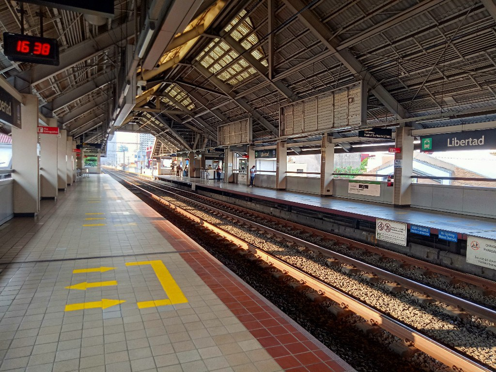
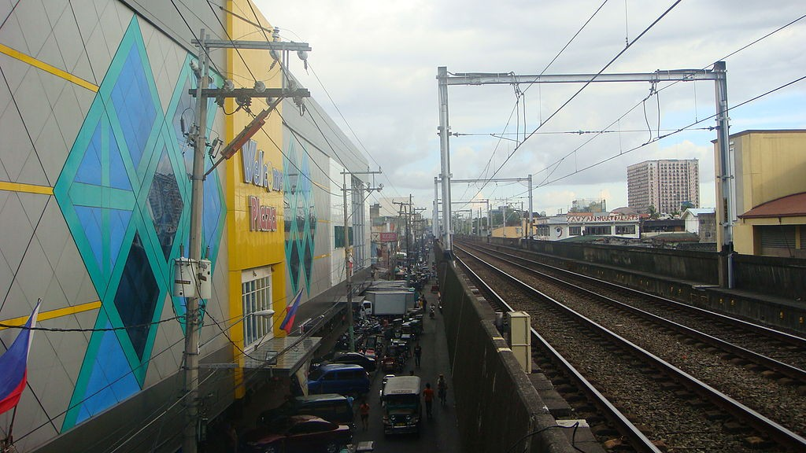
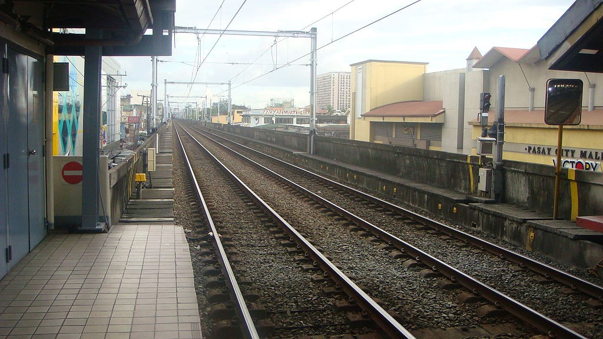

Libertad
LRT-1 station
Libertad station (also known as Antonio Arnaiz station or simply Arnaiz station) is an elevated Manila Light Rail Transit (LRT) station situated on Line 1. The station is located in Pasay at the corner of Taft Avenue and Arnaiz Avenue. The station is named after the former Libertad (Spanish for
Libertad station is the third station for trains headed to Fernando Poe Jr., the eighteenth station for trains headed to Baclaran, and is one of the four stations serving Pasay, the others are Gil Puyat, EDSA, and Baclaran.
liberty) Street, which is a junction of both Roxas Boulevard and Taft Avenue in Pasay. The name Libertad survives as an area name, nowadays, after Libertad Street became a part of Antonio Arnaiz Avenue.
| Libertad | |||||||
|---|---|---|---|---|---|---|---|
|  | |||||||
| General information | |||||||
| Location | Taft Avenue, Santa Clara, Pasay, Metro Manila, Philippines | ||||||
| Owned by | Department of Transportation Light Rail Transit Authority |
||||||
| Operated by | Light Rail Manila Corporation | ||||||
| Line(s) | Line 1 | ||||||
| Platforms | 2 (2 side) | ||||||
| Tracks | 2 | ||||||
| Construction | |||||||
| Structure type | Elevated | ||||||
| Parking | Yes (Victory Pasay Mall / Pasay City Mall & Public Market) | ||||||
| Other information | |||||||
| Station code | LI | ||||||
| History | |||||||
| Opened | December 1, 1984 | ||||||
| Services | |||||||
|
|||||||
Libertad station is the third station for trains headed to Fernando Poe Jr., the eighteenth station for trains headed to Baclaran, and is one of the four stations serving Pasay, the others are Gil Puyat, EDSA, and Baclaran.
There are bus terminals for some bus lines near the station, while jeepneys, taxis, and tricycles stop at and around the station entrance. However, buses also stop near the station, for those riding buses that do not stop at the nearby bus terminals. Jeepneys that leave adjacent to the station head along Arnaiz Avenue for various parts of Caloocan, Makati, Manila, and Pasay.
The station is adjacent to retail establishments especially the Pasay City Mall and Public Market and Wellcome Plaza (also known as Masagana Citimall, which houses a Puregold branch).

The rails

View of nearby malls
- On June 21, 2011, at 8:00 AM, a train suffered a short-circuit in one of its electrical components at Libertad station. On the same day, at 2:23 PM, a power cable was hit by lightning, disrupting the line's operations for three hours.
- On July 21, 2018, at around 6:00 AM, a contact wire sparked near Libertad station. A provisional service between Roosevelt and United Nations stations were implemented. Normal operations resumed at 2:59 PM after the cable was fixed.
- On February 17, 2023, operations were limited between Roosevelt and Gil Puyat due to electrical problems at Libertad station.
| Existing stations | |
|---|---|
|
Baclaran
EDSA Libertad Gil Puyat Vito Cruz Quirino Pedro Gil United Nations Central Carriedo |
Doroteo Jose
Bambang Tayuman Blumentritt Abad Santos R. Papa 5th Avenue Monumento Balintawak Fernando Poe Jr. |
| Under construction | |
|
Redemptorist
MIA Asia World Ninoy Aquino |
Dr. Santos
Las Piñas Zapote Niog |
| North Triangle | |